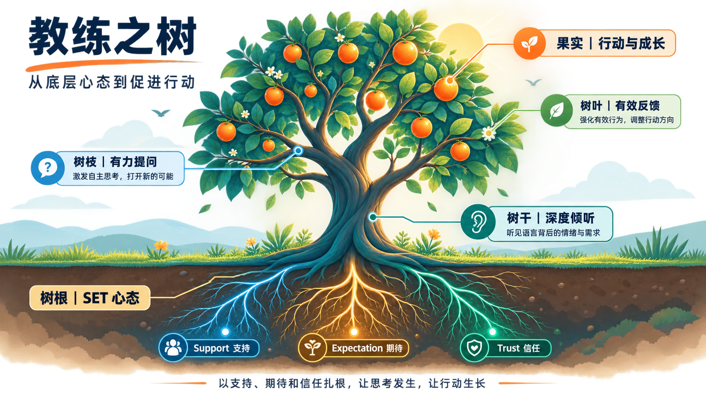
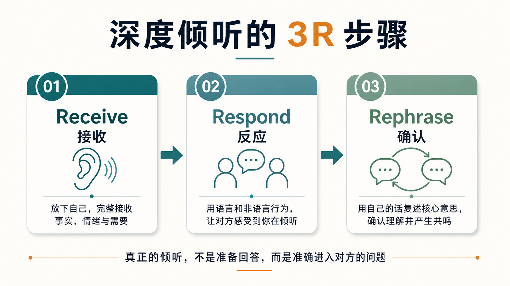
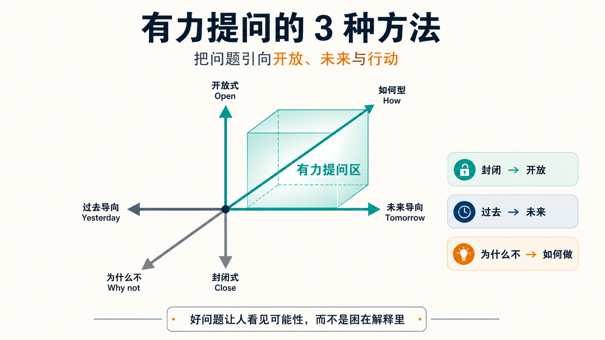
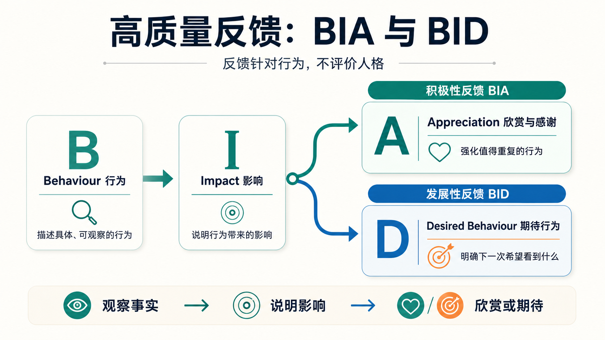
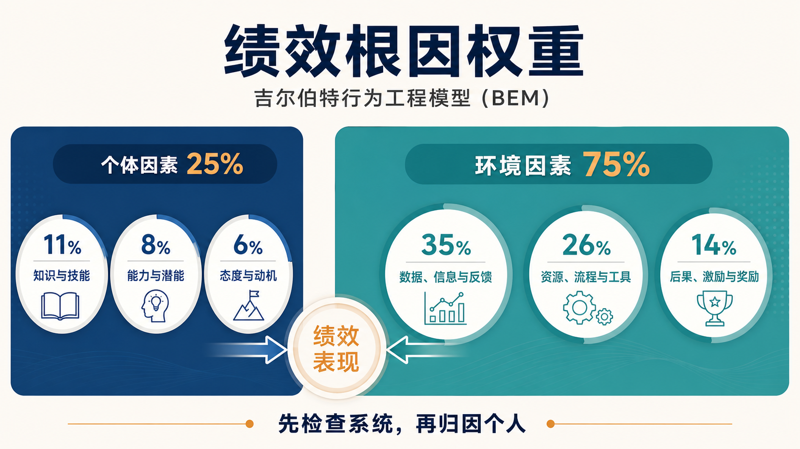
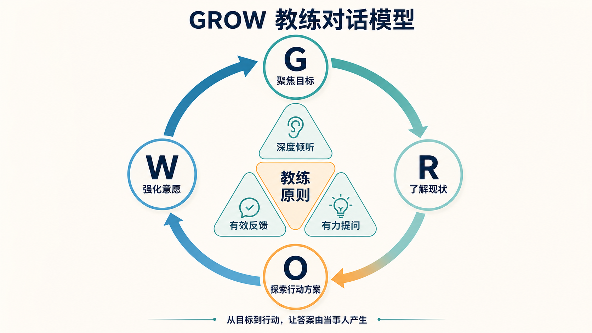

MANAGEMENT × COACHING
M201培训：教练领导力
2026年8月22日，我参加了一整天的M201教练领导力培训。
过去谈管理，我更习惯讨论目标、组织、责任和结果。这次培训提醒我：管理者真正重要的工作，不只是亲自解决问题，而是帮助团队成员逐渐形成解决问题的能力。
先记下当天最有触动的九句话：
一、教练之树：从底层心态到促进行动
老师用一棵树来解释教练领导力：树根是心态，树干是倾听，树枝是提问，树叶是反馈，最终结出行动与成长的果实。

树根：SET——教练的底层心态
树根看不见，却决定整棵树能长多高。
教练式管理的底层心态，可以概括为SET：
Support + Expectation + Trust
支持 + 期待 + 信任
真正困难的不是掌握几个提问技巧，而是管理者是否真的相信：
- 对方拥有潜力；
- 对方能够找到答案；
- 解铃还须系铃人；
- 我愿意让他充分思考；
- 我也愿意在必要时提供支持和兜底。
如果管理者心里想的是：
“我已经知道答案，只是想通过提问，让你最终说出我的答案。”
这就不是真正的教练，而是把指令包装成了提问。
教练式管理也不是降低要求、放弃管理责任。它真正表达的是：
我对结果保持期待，对过程提供支持，对当事人的能力给予信任。
树干：倾听——让信任发生
倾听不只是听见“他说了什么”，还要进一步理解：
他为什么这样说？
语言背后有什么情绪、判断和需要？
深度倾听，是站在对方的立场，听见语言背后的情绪与需求。倾听最终希望让对方感受到：
“你真的懂我。”
只有当一个人感受到自己被理解，他才更愿意说出真实情况、面对真正的问题，并进入更深入的思考。
树枝：提问——帮助思维产生新的连接
树枝不断分叉，就像好的问题能够帮助对方打开新的思考路径。
教练式提问不是为了展示领导有多聪明，而是站在对方的立场，通过适当的问题激发自主思考，帮助他找到自己的解决方法。
因此：
好的问题，不等于高深的问题。
真正的好问题通常具备两个特征：对方愿意回答；回答以后，他产生了新的认识。
树叶：反馈——为行动提供能量
反馈让人看见自己的行为及其影响，从而获得继续行动或调整方向的能量。
高质量反馈针对具体、可观察的行为，而不是评价一个人的人格。反馈的目的也不是证明谁对谁错，而是：
让有效行为得到强化，让无效行为得到调整。
果实：行动与成长
倾听、提问和反馈都不是目的。一次教练对话最终要帮助当事人形成更清晰的目标、更独立的判断、更丰富的选择和更明确的行动。
如果双方谈得很好，却没有形成决定、承诺或下一步，这次对话仍然没有完成闭环。
二、教练的三项核心能力
1. 深度倾听：先理解，再解决
深度倾听可以用3R来理解：

| 步骤 | 含义 | 关键动作 |
|---|---|---|
| Receive 接收 | 暂时放下自己的判断和答案 | 完整接收事实、情绪与需要 |
| Respond 反应 | 让对方感受到“我在听” | 用目光、点头、停顿和简短回应建立连接 |
| Rephrase 确认 | 检查双方是否理解一致 | 用自己的话复述核心意思，请对方确认 |
培训中有几个观点让我印象很深。
第一，很多负向情绪背后，都有一个没有得到满足的正向需求。听到抱怨时，不要只处理抱怨本身，而要理解对方真正重视和需要的是什么。
第二，倾诉很多时候不是为了立刻寻找答案，而是为了被理解。建议、安慰、批判和连续追问，看似都在帮助对方，却可能让倾听过早结束。
第三，理解不等于赞同。管理者可以理解对方为什么这样想，同时保留自己的判断。
繁体字“聽”也提供了一个很好的现代隐喻：用耳朵接收，用眼睛观察，把对方放在重要位置，用一颗专注的心去理解。
2. 有力提问：从解释过去转向创造未来

有力提问有三个重要方向：
- 从封闭式走向开放式：少问只能回答“是或不是”的问题，多问“你怎么看”“还有呢”。
- 从过去导向走向未来导向：不要一直停留在问题和症状中，而要先定义希望抵达的状态。
- 从Why not走向How：失败时少用带有质问感的“为什么”，多问“发生了什么”“接下来可以怎么做”。
“还有呢？”是一个很有力量的问题。它让对方继续发散，越过最先想到、也最惯性的答案。教练要先帮助对方扩大选择空间，再一起收敛到行动方案。
一个问题有没有力量，不取决于它听起来多么深刻，而取决于它是否让对方的思考向前走了一步。
3. 有效反馈：针对行为，不评价人格

积极性反馈可以使用BIA：
Behaviour 行为 → Impact 影响 → Appreciation 欣赏与感谢
发展性反馈可以使用BID：
Behaviour 行为 → Impact 影响 → Desired Behaviour 期待行为
两种反馈都从具体、可观察的行为出发。不是说“你不够负责”，而是说：
“这次评审前，风险没有提前同步，导致团队没有时间准备替代方案。下一次，我希望你在发现风险的当天完成同步。”
培训中还有三个很实用的建议：
- BIA不只用于明星员工，而应该面向全员；
- BIA下属很重要，BIA老板同样重要；
- 可以先从BIA家人开始练习。
三、很多“人的问题”，其实是环境的问题
教练式管理强调发挥人的潜力，但不能把所有绩效问题都归因于个人。

课程用吉尔伯特行为工程模型（BEM）提供了一套诊断框架。图中的权重可以作为诊断参考，而不是适用于所有组织的统计定律；更重要的是“先检查环境，再检查个人”的顺序。
当员工绩效没有达到预期时，管理者可以依次询问：
- 信息：目标、标准、边界和反馈清楚吗？
- 资源：时间、人员、数据、工具和流程够吗？
- 激励：组织实际奖励的行为与目标一致吗？
- 技能：他是否掌握完成任务的方法？
- 能力：岗位与个人能力、精力是否匹配？
- 动机：排除前五项后，才讨论是否愿意做。
管理者最容易犯的错误，是用培训解决流程问题，用激励解决资源问题，最后把系统问题归咎于个人态度。
老师总结得很好：
好的人决定组织上限，好系统提高组织下限。
四、GROW：让教练对话形成闭环
GROW为教练对话提供了一条清晰路径：

| 阶段 | 核心任务 | 一个关键问题 |
|---|---|---|
| G — Goal | 聚焦目标 | 这次对话结束时，你最希望得到什么结果？ |
| R — Reality | 了解现状 | 目前真实发生了什么？最大的障碍是什么？ |
| O — Options | 探索方案 | 你有哪些选择？还可以怎么做？ |
| W — Will | 强化意愿 | 你决定先做什么？什么时候开始？ |
和同事一起练习时，“这些因素背后的原因是什么？”这个问题明显推动了我的思考。它没有直接给答案，却让我从表面现象继续向下探索。
完整的话术参考见：
GROW流程话术参考
下面的问题不是需要逐项照读的检查表。根据对话进展，选择当下最有价值的问题；提问后，给对方留出思考和沉默的时间。
G — Goal：聚焦目标
- 今天你想聊点儿什么？
- 你的目标具体是什么？
- 假如目标已经实现，你会看到什么？
- 哪些关键成果可以支撑目标达成？
- 实现这个目标对你有什么价值？还有呢？
- 你希望多长时间达成目标？
R — Reality：了解现状
- 针对刚才谈到的目标，目前的实际情况是怎样的？
- 如果满分是10分，你认为现在处于几分？为什么？
- 你过去做过哪些尝试？效果怎么样？
- 影响目标实现的关键因素有哪些？
- 这些因素背后的原因是什么？
- 你有哪些资源和优势？
O — Options：探索行动方案
- 为了实现目标，你可以做些什么？还有呢？
- 和以往相比，有什么不同的做法？
- 你需要获得哪些人的帮助？准备如何获得？
- 如果信心不足，原因是什么？还需要补充哪些行动？
- 是否需要邀请AI提供参考方案，再由你判断和选择？
- 交流结束后，你准备采取的第一步是什么？
W — Will：强化意愿
- 通过刚才的交流，你最大的收获是什么？
- 你最终选择哪个方案？准备在什么时间完成什么？
- 如果满分是10分，你的行动意愿是几分？
- 你希望我提供什么支持？哪些决定由你自己负责？
- 我们什么时候检查进展？用什么结果判断是否有效？
五、回到管理：帮助DRI想清楚，但不替他决策
这次培训让我重新理解了教练式管理与责任制之间的关系。
教练不是取消管理，也不是让管理者退到一边。方向、资源、边界和重大取舍仍然需要管理者负责；但在清晰的边界内，管理者不应通过提问把自己的答案塞给DRI，而应帮助DRI看清目标、现状、选择和后果，最终形成自己的判断与承诺。
对我而言，教练领导力可以浓缩为一句话：
以支持、期待和信任扎根，以倾听建立连接，以提问打开思路，以反馈促进行动，最终让人成长、让结果发生。
管理者不是替员工解决所有问题，而是建设一个环境，让团队成员越来越有能力解决问题。
六、我们的风格：一家三口的三套沟通操作系统
培训结束后，我们一家三口都做了ASCSP行动教练风格测评：
| 家庭成员 | 主导风格 | 辅助风格 | 一句话特点 |
|---|---|---|---|
| 我，王豪 | 老虎型 | 猫头鹰型 | 目标导向、直接果断，同时重视事实、逻辑和质量 |
| 儿子，王牧熙（妞妞） | 孔雀型 | 老虎型 | 热情外向、愿意表达，也希望拥有自主权和挑战 |
| 妻子（笨笨） | 孔雀型 | 熊猫型 | 重视交流、氛围和情感连接，也在意和谐与彼此感受 |
这份测评用在工作中，容易变成“应该怎样管理或教练这个人”。但回到家庭，核心问题应该换成：
这个人用什么方式，最容易感受到爱、尊重和被理解？
测评不是给家人贴标签，更不是判断谁对谁错。它只是帮助我们看见：每个人发出爱的方式，未必正好是另一个人最容易接收到的方式。
我：被信任、说清楚、一起把事情做好
老虎型让我习惯迅速行动、直面目标；猫头鹰型又让我看重事实、逻辑和完整性。对我来说，爱和尊重常常表现为：把事情说清楚、遵守约定、相信我的判断，同时在需要时给出准确的信息。
但我表达关心的方式也很容易变成“马上分析问题、给出方案”。我以为自己在负责，家人感受到的却可能是催促、纠正，或者“你没有先理解我”。
对我最有效的表达可以是：
- “我相信你会认真处理，需要我补充什么信息？”
- “这件事我们希望得到什么结果？边界是什么？”
- “我现在需要的是一个明确结论，还是先把情况讲完整？”
王牧熙：先看见我、听我讲，再和我一起行动
王牧熙的孔雀型需要表达、回应和连接，辅助的老虎型又意味着他不只想被照顾，也希望有选择权、挑战和行动空间。
他最容易从这些方式中感受到爱：有人认真听他的故事，对他的想法表现出真实兴趣，及时肯定他的亮点，并把他当作一个能够参与决定的人。
如果大人只给结论、只讲规则，或者在他兴奋表达时迅速纠正细节，他可能听到的不是“爸爸在帮助我”，而是“我的感受和想法不重要”。更适合他的顺序是：
- 先连接：“听起来你真的很兴奋／很不舒服。”
- 再邀请：“你最想让我听懂的是哪一部分？”
- 给选择：“这里有两个可以接受的方案，你想选哪个？”
- 落行动：“你准备先做哪一步？需要我怎样支持？”
妻子：有回应、有陪伴，温和地把真实感受说出来
妻子的孔雀型重视交流、热情和情感回应，熊猫型则更看重安全感、和谐、体贴与稳定陪伴。她可能不是先通过“问题有没有解决”判断自己是否被爱，而是先感受：你有没有认真回应我，愿不愿意站在我这一边理解我。
对她而言，有效的爱往往很具体：放下手里的事听她说，回应她的情绪，表达感谢，重要决定提前商量，发生分歧时保持温和而不是突然进入辩论模式。
一句很有用的话是：
“这件事你希望我先听你说、陪陪你，还是一起想办法？”
这句话把“倾听”和“解决”分开，也避免我用自己最擅长的方式，替代她真正需要的方式。
我们一家最有意思的组合
家里有两位孔雀型：妻子和儿子负责带来表达、故事、热情和氛围；我更像提供方向、结构和落地的人。这是很好的互补，但也容易出现三种错位。
第一，他们还在建立连接，我已经开始解决问题。对孔雀型而言，对话本身就是关系的一部分；对老虎型而言，对话常常是为了形成结论。家庭里的更好顺序是：先连接，再解决。
第二，我和儿子都带有老虎型成分。当边界不清、双方都想主导时，容易变成力量碰撞。与其反复催促，不如把不可协商的边界讲清楚，再把边界内的选择权交给他。
第三，妻子的熊猫型容易自然承担缓冲者。她可能为了维持气氛而少说自己的需要。家庭不应该让最温和的人长期负责吸收冲突；我要主动询问她真实的意见，而不是把“没有反对”理解成“完全同意”。
把教练方法变成家庭习惯
我们不需要把家变成管理会议，但可以建立几个很轻的习惯：
- 先问频道。“你现在希望我听、抱抱你，还是一起想办法？”
- 先复述，再回应。用一句话确认：“你的意思是……我理解得对吗？”
- 每天一次具体欣赏。不说笼统的“你真棒”，而是说清楚看见了什么行为，以及它带来的影响。
- 冲突时只谈行为和影响。不说“你总是”“你就是”，改用BIA或BID表达具体事实。
- 每周一次15分钟家庭对话。前5分钟说感受和故事，中间5分钟澄清事实与需要，最后5分钟只确定一个下一步。
一家人真正需要的，不是互相成为更高明的教练，而是逐渐学会用对方能够接收到的方式去爱。理解风格，不是为了预测和控制彼此，而是为了少一点误解，多一点翻译。
附录：ASCSP 行动教练风格测评
培训最后还提供了一份教练策略风格测评。它通过 24 道二选一题，帮助识别自己更偏向老虎、孔雀、熊猫还是猫头鹰的沟通风格，并给出相应的教练策略建议。